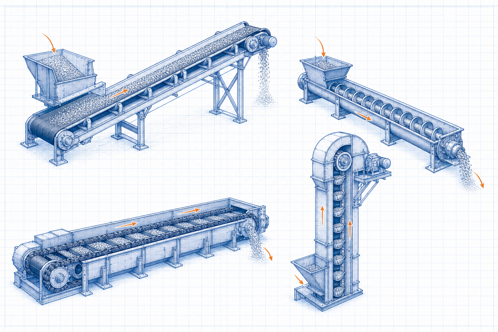

Bulk conveying equipment guide
Dense Phase Pressure Conveying System
Dense Phase Pressure Conveying System is an industrial equipment topic within Pneumatic Conveying Systems. It explains the equipment’s function, main interfaces and operating considerations when the required duty is to receive, move, elevate or discharge a defined material flow through the required route.

- Content type
- Bulk conveying equipment guide
- Level
- Industrial Equipment › Conveying Systems › Pneumatic Conveying Systems › Dense Phase Conveying › Dense Phase Pressure Conveying System
- Audience
- Student · Design engineer · Project engineer · Plant engineer
- Last reviewed
- 30 August 2026
What Is Dense Phase Pressure Conveying System?
Dense Phase Pressure Conveying System is an industrial equipment topic within Pneumatic Conveying Systems. It explains the equipment’s function, main interfaces and operating considerations when the required duty is to receive, move, elevate or discharge a defined material flow through the required route.
In this hierarchy, it is treated as bulk-material conveying equipment. A practical review starts with the required duty and then checks the equipment’s flow path, interfaces and constraints.
Why Is It Important in Industrial Equipment?
Dense Phase Pressure Conveying System should be considered as part of a complete pneumatic conveying systems arrangement, not as an isolated item. Its actual configuration depends on the process duty, material or fluid basis, interfaces, operating conditions and applicable project requirements.
Key Terms and Definitions
- Dense Phase Pressure Conveying System
- The equipment subject defined by this page title.
- Dense Phase Conveying
- The approved Level 4 equipment topic used to organise this guide.
- Pneumatic Conveying Systems
- The Level 3 equipment system that establishes the immediate operating context.
- Operating basis
- The declared duty, process conditions, material or fluid basis, interfaces and requirements used for review.
Fundamental Operating Principle
Dense Phase Pressure Conveying System should be considered as part of a complete pneumatic conveying systems arrangement, not as an isolated item. Its actual configuration depends on the process duty, material or fluid basis, interfaces, operating conditions and applicable project requirements. The component and system arrangement must therefore be reviewed with the duty, control philosophy, safety functions and maintenance needs in view.
Rating Basis, Symbols and Units
Equipment rating
Use the documented rating method appropriate to the actual equipment and service.
Dense Phase Pressure Conveying System does not have one universal equation. Use verified vendor, project or standards-based relationships that match the configuration and defined operating conditions.
Unit consistency
Use one declared unit system. State the basis for capacity, temperature, pressure, material properties, dimensions, loads and measured operating data.
Assumptions and Validity Range
- The documented equipment arrangement represents the actual service.
- Inputs are traceable and compatible with the declared operating condition.
- Supplier requirements, safety functions, codes and project specifications are reviewed separately.
Factors Affecting Equipment Performance
Duty and operating basis
material properties, capacity, route geometry and the required duty cycle
Equipment and interfaces
loading, transfer, sealing, drive and discharge arrangements
Project constraints
maintenance access, spillage control, guarding and interface loads
Step-by-Step Equipment Review Method
- Define the system boundary, required duty and operating envelope for Dense Phase Pressure Conveying System.
- Collect verified process information, drawings, material or fluid data, equipment interfaces and relevant constraints.
- Select the applicable vendor, project or standards-based method for the equipment configuration.
- Review capacity, controllability, maintainability, protection and operating limits on one consistent basis.
- Obtain qualified engineering review before final selection, design or modification.
Illustrative Equipment Review
Hypothetical example — not a design calculation
A project team compares an equipment option with the stated duty. It confirms the process basis and interfaces, checks an appropriate documented rating method, and evaluates the result against safety, access, operation and maintenance requirements before taking the decision forward.
Industrial Applications
- Preliminary equipment definition and design-basis development for Dense Phase Pressure Conveying System.
- Review of process, mechanical, electrical, control and structural interfaces.
- Operation, inspection, maintenance and safe-work planning within the assigned plant system.
Common Mistakes and Limitations
- Using generic equipment information without confirming the actual service conditions.
- Ignoring the equipment’s process, mechanical, electrical, control, civil or safety interfaces.
- Treating an educational article as supplier data, a detailed specification or final project approval.
Frequently Asked Questions
Can this page be used for final equipment selection?
No. It is educational and preliminary reference material. Final selection needs verified project data, the applicable requirements, supplier information and qualified engineering review.
What should be checked first?
Check the required duty, service conditions, material or fluid basis, interfaces, operating sequence and governing project requirements.
Why are related resources included?
They show the system context needed to avoid treating an equipment component as an isolated decision.
Expanded technical guide
Engineering Context and Practical Use
Dense Phase Pressure Conveying System is an industrial equipment topic within Pneumatic Conveying Systems. It explains the equipment’s function, main interfaces and operating considerations when the required duty is to receive, move, elevate or discharge a defined material flow through the required route. Equipment articles should be reviewed as part of the installed system: operating duty, material or fluid, interfaces, controls, maintenance access, safety systems and service evidence all affect suitability.
Define the physical and operating boundary before selecting equipment, interpreting performance or changing a set point. Consider normal operation, start-up, shutdown, minimum and maximum duty, maintenance condition, upset cases, seasonal effects and credible future modifications. A non-normal case can govern capacity, reliability, integrity, quality, environmental duty or safety.
Data and assessment basis
Define the boundary
inputs → equipment or system → outcome
Identify interfaces, reference points and the actual decision the assessment supports.
Use compatible data
result = valid method + representative inputs
Record units, service condition, source revision, material or fluid basis and uncertainty.
Check the limit
normal case ≠ governing case
Review the condition that controls capacity, reliability, safety, serviceability or performance.
Verify the result
assessment ↔ field evidence
Compare the conclusion with inspection, measurements, supplier limits and controlled documents.
Practical engineering method
- Define the duty, system boundary, required decision and applicable project or code basis.
- Collect current drawings, data sheets, service properties, operating trends and maintenance history.
- Set normal, minimum, maximum, start-up, upset and future cases that are relevant to Dense Phase Pressure Conveying System.
- Select a method appropriate to the actual configuration and valid range.
- Review interfaces with utilities, controls, access, inspection, isolation and protection systems.
- Test important sensitivities where uncertainty could change the decision.
- Record inputs, sources, limitations, reviewer actions and field-verification requirements.
Operation, maintenance and reliability
Operating condition
Trend the parameters that reveal loss of duty, integrity, quality or environmental performance.
Maintenance access
Provide safe isolation, inspection, cleaning, lifting, spares and reinstatement for the actual arrangement.
Controls and safeguards
Check alarms, trips, interlocks and manual actions over the complete operating envelope.
Change management
Reassess after changes to material, load, fuel, layout, component, software, control or operating procedure.
Field verification
Use calibrated measurements at defined locations and comparable operating conditions.
Competent review
Escalate specialist, code, safety, environmental or supplier decisions beyond this educational scope.
Common decision errors
- Using an obsolete drawing, data sheet, property value or equipment limit.
- Mixing design, actual and reference conditions without a controlled conversion.
- Checking one normal case while missing the governing condition.
- Ignoring maintenance, access, isolation, controls or downstream consequences.
- Claiming precision greater than the evidence supports.
- Treating educational guidance as final design, safety, procurement or compliance approval.
- Failing to update the basis after a controlled change.
Lifecycle Evidence, Field Verification and Change Control
Dense Phase Pressure Conveying System should remain connected to current evidence throughout its service life. Material variation, wear, fouling, corrosion, temperature, loading, contamination, control changes, maintenance practice and upstream process variation can change the basis on which equipment or a calculation was originally selected.
Maintain a usable evidence set
Record whether each important input is measured, calculated, supplier-rated, estimated or assumed. Retain the source, revision, date, units, reference condition, measurement location and expected uncertainty. This prevents a result from being compared with an obsolete data sheet, a different operating case or a measurement taken at another system boundary.
Use equivalent operating conditions when comparing field trends. Document production load, material or fuel condition, relevant pressure and temperature, equipment configuration, controls, instruments and maintenance state. A plausible trend can be misleading if these conditions are not comparable.
Check the actual governing condition
Review normal operation as well as start-up, shutdown, low load, maximum duty, dirty condition, maintenance bypass, upset, seasonal effect and credible future modification. The governing case may control capacity, reliability, integrity, emissions, quality, energy, electrical duty, serviceability or safety.
If reasonable uncertainty changes a decision, improve the evidence through inspection, representative testing, calibrated measurement, supplier confirmation, a controlled trial or specialist analysis. This is more valuable than reporting extra decimal places from an uncertain basis.
Turn maintenance into engineering information
Inspection findings can reveal local wear, leakage, buildup, cracking, corrosion, misalignment, overheating, abnormal vibration, control instability or loss of access that simple selection methods do not show. Record the location, condition, observed mechanism, action and follow-up result so future decisions use the actual service history.
Define the early-warning parameters, review trigger, responsible role and escalation path. Repeated alarms, manual intervention, rising energy, pressure loss, reduced capacity, dust release, unstable flow or recurring component damage should be investigated as system evidence, not reset as isolated symptoms.
Implement controlled change
Before changing material, equipment, layout, settings, controls, operating procedure or maintenance practice, check affected drawings, equipment limits, protective functions, isolation requirements, permits, training, spares and downstream interfaces. A local improvement can move a problem to another part of the system.
After implementation, compare measured performance with stated acceptance criteria at comparable conditions, update the controlled record and document any remaining limitation. This page is an educational reference; final project, code, safety, environmental, electrical and procurement decisions require qualified review with current site information.
Expanded FAQs
What should be established first?
Establish the actual system boundary, relevant service condition, required decision and governing case for Dense Phase Pressure Conveying System.
Why is normal operation not enough?
Start-up, low-load, peak, maintenance, upset and future cases can control different limits.
Which records should be retained?
Keep inputs, source and drawing revisions, assumptions, results, limitations, review record and verification evidence.
When should the assessment be repeated?
Repeat it after a material, equipment, route, load, control or operating-procedure change.
How should the result be checked?
Use inspection and calibrated measurements at the same boundary and condition basis.
Can this page approve final project work?
No. Final design, code, safety, procurement and compliance decisions require current project information and qualified review.
Why involve operations and maintenance?
They identify practical limits involving access, isolation, cleaning, reliability and actual behaviour.
What makes input data representative?
It matches the actual material, configuration, service, source revision, measurement location and operating condition.
What is an important limitation?
A simplified guide cannot include every site-specific geometry, degradation mechanism, safeguard or code requirement.
What should be reviewed after commissioning?
Compare performance, condition, alarms, losses, quality and maintenance findings with the documented basis.
How should unexpected behaviour be handled?
Verify the data and boundary, investigate the difference and follow the approved technical-review or change-management process.
Literature-informed technical note
Engineering context and review boundaries
Conveying-equipment reliability depends on the complete material route: feed condition, loading zone, alignment or conveying path, drive and tensioning arrangement, discharge, guards, access, cleaning and the behaviour of the handled material. Individual component capacities must be checked against the installed system and operating range.
Conveying-equipment reliability depends on the complete material route: feed condition, loading zone, alignment or conveying path, drive and tensioning arrangement, discharge, guards, access, cleaning and the behaviour of the handled material. Individual component capacities must be checked against the installed system and operating range.
Use this page to structure preliminary understanding, data collection and review—not as a substitute for approved design information. Record the source revision, units, operating mode, assumptions, measurement location and known limitations so another competent reviewer can reproduce the conclusion.
Literature reviewed for this update
- Mechanical Engineering Handbook, machine elements and materials-handling sections.
- Mechanical Engineer’s Handbook, machine design and machinery sections.
- J. J. Uicker, G. R. Pennock and J. E. Shigley, Theory of Machines and Mechanisms.
This is an original educational summary based on the listed literature. It does not reproduce protected source text, figures, tables or design data. Confirm current standards, project documents and supplier information before use.
References
- Conveyor Equipment Manufacturers Association. Belt Conveyors for Bulk Materials. CEMA.
- Conveyor Equipment Manufacturers Association. Screw Conveyors for Bulk Materials. CEMA.
This is an original educational summary and does not reproduce protected book text, tables, figures or standards material.